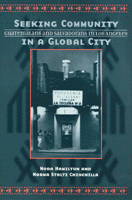

<body bgcolor="#FFFFFF" text="#000000" link="#0000FF" vlink="#CC0000" alink="#CC0000"><center><hr width="350" size="1" align="center" noshade>A look at the challenges faced by Central American immigrants in Los Angeles<hr width="350" size="1" align="center" noshade><p><a href="https://cdcshoppingcart.uchicago.edu/Cart/ChicagoBook.aspx?ISBN=9781566398671&&PRESS=temple" target="_top">Buy this book!</a> | <a href="https://cdcshoppingcart.uchicago.edu/Cart/Cart.aspx?PRESS=temple" target="_top">View Cart</a> | <a href="https://cdcshoppingcart.uchicago.edu/Cart/Cart.aspx?PRESS=temple" target="_top">Check Out</a></p><p></p></center><!--none//--><h1>Seeking Community in a Global City</h1>
<H2>Guatemalans and Salvadorans in Los Angeles</H2>
<h3>Nora Hamilton and Norma Stoltz Chinchilla</h3>
<P>cloth 1-56639-867-3 $80.50, Jun 01, <FONT COLOR=#990033>Available</FONT>
<br>paper 1-56639-868-1 $28.95, Jun 01, <FONT COLOR=#990033>Available</FONT>
<BR> 304 pp
6x9
12&nbsp;tables 5&nbsp;map(s) 2&nbsp;figures 22&nbsp;halftones
</P><h3 align="center"><P><font color="#996633">Best book published in the area of Race/Ethnicity and Foreign Policy/Globalization given by the section on Race, Ethnicity, and Politics of the American Political Science Association (APSA),
2002</font></P>
</H3>
<BLOCKQUOTE><I>"</I>Seeking Community in a Global City<I> is the impressive culmination of two decades of collaborative research by the authors with Central Americans in Los Angeles. Drawing on extensive interviews and narrative accounts from a broad spectrum of Salvadoran and Guatemalan community members and leaders, this book fills a substantial gap in our understanding of contemporary migration. It will prove to be essential reading for scholars, students, and decision makers alike."</I>
<br>&#151<b>James Loucky</b>, author of <I><a href="1539_reg.html" target="_top">The Maya Diaspora</a></I> (Temple)<I></I></BLOCKQUOTE>
<p>Driven by the pressures of poverty and civil strife at home, large numbers of Central Americans came to the Los Angeles area during the 1980s. Neither purely economic migrants, though they were in search of stable work, nor official refugees, although they carried the scars of war and persecution, Guatemalans and Salvadorans were even denied the aid given to refugees such as Cubans and Vietnamese. In addition, these immigrants sought refuge in a city undergoing massive economic and demographic shifts of its own. The result was&#151and is&#151a complex interaction that will help to reconceptualize the migration experience.
<p>Based on twenty years of work with the Los Angeles Central American community and filled with facts, figures, and personal narratives, <I>Seeking Community in a Global City</I> presents this saga from many perspectives. The authors examine the forces in Central America that sent thousands of people streaming across international borders. They discuss economic, political, and demographic changes in the Los Angeles region and the difficulties the new immigrants faced in negotiating a new, urban environment. They look at family roles, networking, work strategies, and inter-ethnic relations. But they also consider policy issues and alliances, changing expectations, shifting priorities, and the reciprocal effect of the migrants and the city on each other.
<BR>&nbsp;<h2>Excerpt</h2><P>Excerpt available at <a href="http://www.temple.edu/tempress">www.temple.edu/tempress</a></p>
<BR>&nbsp;<h2>Reviews</h2>
<p><i>"...the book offers a rare look into the experiences of these important migrant groups. ... The authors utilise state-of-the-art theories and concepts of migration to frame their study, and as a result their analysis is both comprehensive and sensitive."</i>
<br>&#151<b><i>Journal of Ethnic and Migration Studies</i></b>
<p>Read a <a href="../authors/1458_review.pdf">review</a> from <I>Contemporary Sociology</I>, Volume 31.2, written by Cecilia Menjivar (pdf).
<p>Read a <a href="../authors/1458_review2.pdf">review</a> from <I>The Journal of American Ethnic History</I>, Summer 2002, written by Peggy Levitt (pdf).
<BR>&nbsp;<h2>Contents</h2><P>
<p>List of Maps and Tables
<br>Preface
<br>1. Introduction
<br>2. Origins and Patterns of Central American Migration
<br>3. Negotiating the Urban Scene
<br>4. The Struggle for Survival: Working in Los Angeles
<br>5. Seeking Justice, Challenging Policy
<br>6. The 1990s: Changing Contexts, Shifting Expectations
<br>7. Organizing Locally and Transnationally: Changing Priorities, Strategies, and Alliances
<br>8. The Elusive Community: Salvadorans and Guatemalans in Los Angeles
<br>Appendix A: Chronology of Events
<br>Appendix B: Partial List of Informants
<br>Notes
<br>References
<br>Index
</P><BR>&nbsp;<H2>About the Author(s)</H2>
<table><tr><td valign="top"><img src="/tempress/authors/1458_au1.gif" height="90" width="75"></td><td width="100%" valign="middle"><p><b>Nora Hamilton</b> is Associate Professor of Political Science at the University of Southern California.</P></td></tr></table><table><tr><td valign="top"><img src="/tempress/authors/1458_au2.gif" height="90" width="75"></td><td width="100%" valign="middle"><p><b>Norma Stoltz Chinchilla</b> is Professor of Sociology and Women's Studies at California State University, Long Beach.</P></td></tr></table>
<BR><H2>Subject Categories</H2>
<p><A HREF="/tempress/latino.html" TARGET="_top">Latino/a Studies</a>
<BR><A HREF="/tempress/labor.html" TARGET="_top">Labor Studies and Work</a>
<BR><A HREF="/tempress/political.html" TARGET="_top">Political Science and Public Policy</a>
</p>
<p align="center"><a href="https://cdcshoppingcart.uchicago.edu/Cart/ChicagoBook.aspx?ISBN=9781566398671&&PRESS=temple" target="_top">Buy this book!</a> | <a href="https://cdcshoppingcart.uchicago.edu/Cart/Cart.aspx?PRESS=temple" target="_top">View Cart</a> | <a href="https://cdcshoppingcart.uchicago.edu/Cart/Cart.aspx?PRESS=temple" target="_top">Check Out</a></p><p><font face="Arial" size="1"><a href="copyright.html" onMouseOver="window.status='Web Copyright Policy';return true;" onMouseOut="window.status=''" title="Web Copyright Policy">&copy;</a> 2015 <a href="http://www.temple.edu" target="new" onMouseOver="window.status='Link to Temple University home page';return true;" onMouseOut="window.status=''" title="Link to Temple University home page">Temple University</a>. All Rights Reserved. http://www.temple.edu/tempress/titles/1458_reg.html</font></p>